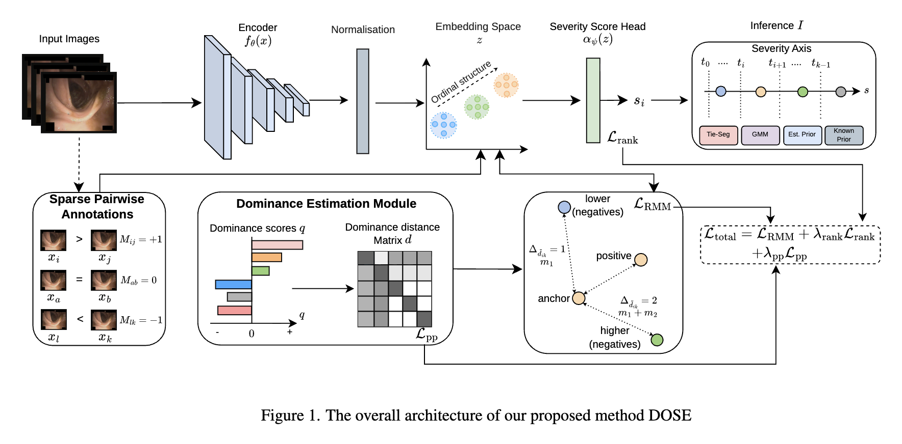
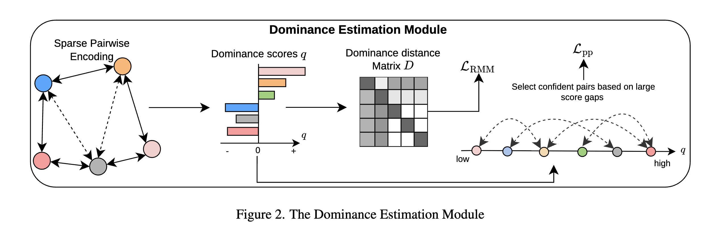
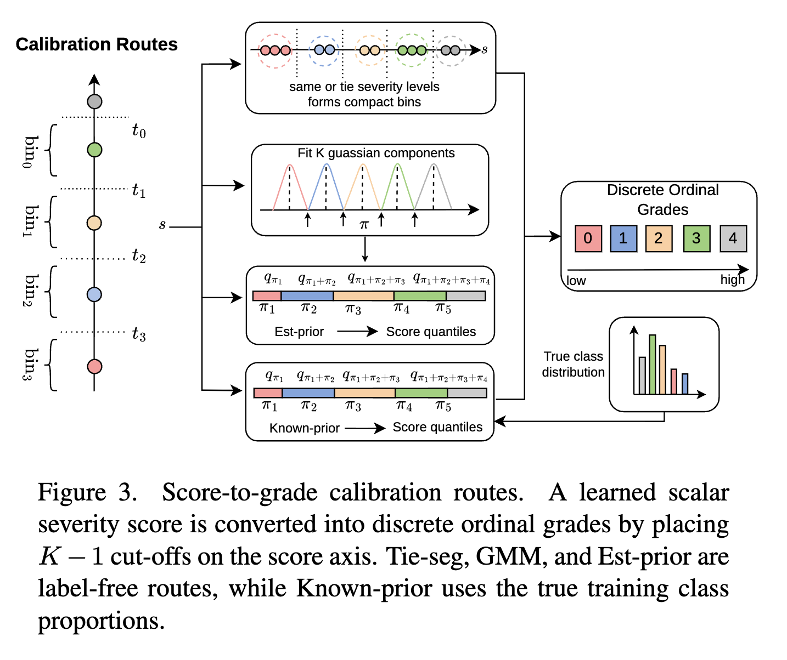

Abstract
Medical severity estimation commonly relies on absolute grade annotations, which are fundamentally ordinal, yet most existing methods often treat the grades as independent categories. Learning-to-rank methods, which can be trained using relative annotations based on severity comparisons of image pairs, can provide continuous severity rankings but cannot directly predict discrete severity grades. We propose Dominance-guided Ordinal Severity Estimation from Sparse Relative Annotations (DOSE), a framework for learning ordinal medical severity from sparse pairwise comparisons without using absolute annotations. DOSE aggregates the observed comparisons through a global comparison graph to estimate a dominance score for each image. Differences between dominance scores set cumulative margins in the embedding space, so that pairs with larger estimated severity differences are separated more strongly, and also generate pseudo-pairs that supervise a scalar severity head alongside the observed comparisons. The learned continuous severity axis is converted into discrete grades via label-free score calibration, with tie-anchored segmentation as the main calibration method. In the experiment, DOSE consistently outperformed pairwise-ranking baselines on ACNE04, IDRiD, and LIMUC under different pair budgets.
Method

Sparse pairwise annotations are aggregated into a global dominance score for every image, whose gaps give label-free ordinal distances. These distances set the cumulative margins of LRMM on the embedding z, while the severity head αψ(z) is trained with Lrank and dominance pseudo-pairs Lpp. At inference, label-free calibration (Tie-seg) turns the severity score into discrete grades.


Results
Comparison with pairwise-ranking baselines and full supervision
| Method | Supervision | Budget | ACNE04 (K=4) | IDRiD (K=5) | LIMUC (K=4) | |||
|---|---|---|---|---|---|---|---|---|
| Acc ↑ | QWK ↑ | Acc ↑ | QWK ↑ | Acc ↑ | QWK ↑ | |||
| Cross-entropy | absolute grades | 100% | 78.6±0.8 | 0.822±0.013 | 86.6±0.4 | 0.914±0.008 | 78.0±0.6 | 0.848±0.011 |
| MarginRank | relative pairs | 5% | 68.6±1.5 | 0.743±0.009 | 73.6±7.8 | 0.812±0.107 | 55.7±0.2 | 0.252±0.020 |
| 10% | 69.5±3.4 | 0.755±0.043 | 80.5±1.1 | 0.882±0.008 | 70.3±1.1 | 0.671±0.046 | ||
| 30% | 71.2±0.3 | 0.788±0.009 | 81.2±0.5 | 0.878±0.002 | 73.9±0.8 | 0.844±0.008 | ||
| 50% | 72.6±2.4 | 0.799±0.020 | 81.1±0.1 | 0.878±0.004 | 74.0±0.6 | 0.847±0.005 | ||
| 70% | 73.1±1.5 | 0.786±0.023 | 81.9±1.5 | 0.890±0.009 | 76.1±0.4 | 0.839±0.004 | ||
| RankNet | relative pairs | 5% | 68.1±1.2 | 0.514±0.009 | 72.1±9.1 | 0.841±0.004 | 69.4±0.8 | 0.599±0.005 |
| 10% | 66.7±0.9 | 0.487±0.011 | 72.3±8.6 | 0.841±0.006 | 71.0±2.9 | 0.674±0.105 | ||
| 30% | 65.5±1.7 | 0.472±0.022 | 60.4±0.6 | 0.861±0.004 | 74.4±0.4 | 0.819±0.003 | ||
| 50% | 66.0±0.9 | 0.487±0.013 | 61.0±0.5 | 0.864±0.002 | 74.4±0.8 | 0.819±0.005 | ||
| 70% | 66.2±2.2 | 0.488±0.029 | 59.8±0.0 | 0.861±0.001 | 74.1±0.6 | 0.819±0.004 | ||
| DOSE (ours) | relative pairs | 5% | 69.3±1.0 | 0.755±0.009 | 78.4±0.4 | 0.839±0.003 | 56.4±0.3 | 0.498±0.141 |
| 10% | 70.2±0.9 | 0.762±0.009 | 79.6±0.8 | 0.900±0.006 | 75.2±0.8 | 0.821±0.008 | ||
| 30% | 72.6±1.2 | 0.807±0.011 | 84.5±0.7 | 0.909±0.010 | 77.5±0.4 | 0.857±0.003 | ||
| 50% | 74.8±0.3 | 0.821±0.001 | 84.0±0.4 | 0.903±0.003 | 78.0±0.6 | 0.862±0.004 | ||
| 70% | 74.1±2.0 | 0.807±0.021 | 84.0±0.4 | 0.910±0.008 | 78.1±0.4 | 0.859±0.004 | ||
Bold: best relative-supervision result.
Calibration routes
| Dataset | Budget | Label-free | Oracle | ||
|---|---|---|---|---|---|
| Tie-seg | GMM | Est-prior | Known-prior | ||
| ACNE04 | 30% | 72.6±1.2 | 73.6±1.2 | 73.6±0.0 | 73.3±0.9 |
| 50% | 74.8±0.3 | 75.0±1.0 | 75.7±0.6 | 75.5±0.9 | |
| 70% | 74.1±2.0 | 75.1±0.8 | 74.4±0.8 | 74.9±1.3 | |
| IDRiD | 30% | 84.5±0.7 | 84.2±0.5 | 84.3±1.1 | 84.7±0.3 |
| 50% | 84.0±0.4 | 83.6±1.0 | 83.9±0.7 | 84.7±0.8 | |
| 70% | 84.0±0.4 | 83.8±0.7 | 83.1±0.7 | 84.8±0.5 | |
| LIMUC | 30% | 77.5±0.4 | 77.6±0.3 | 76.2±0.6 | 77.6±0.5 |
| 50% | 78.0±0.6 | 78.0±0.6 | 76.6±0.3 | 78.1±0.6 | |
| 70% | 78.1±0.4 | 78.2±0.1 | 77.3±0.6 | 78.4±0.2 | |
Accuracy (%). Bold: best label-free route.
Margin ablation
| Dataset | Budget | Tie-seg | Known-prior | ||||
|---|---|---|---|---|---|---|---|
| Acc ↑ | QWK ↑ | Acc ↑ | |||||
| Multi | Single | Multi | Single | Multi | Single | ||
| ACNE04 | 30% | 72.6±1.2 | 69.4±2.6 | 0.807 | 0.768 | 73.3±0.9 | 70.3±1.7 |
| 50% | 74.8±0.3 | 71.3±2.5 | 0.821 | 0.785 | 75.5±0.9 | 71.1±1.5 | |
| 70% | 74.1±2.0 | 71.6±1.2 | 0.807 | 0.786 | 74.9±1.3 | 71.1±1.7 | |
| IDRiD | 30% | 84.5±0.7 | 82.8±1.3 | 0.909 | 0.897 | 84.7±0.3 | 82.6±0.8 |
| 50% | 84.0±0.4 | 83.7±1.0 | 0.903 | 0.902 | 84.7±0.8 | 82.5±1.5 | |
| 70% | 84.0±0.4 | 84.3±1.0 | 0.910 | 0.906 | 84.8±0.5 | 83.1±1.0 | |
| LIMUC | 30% | 77.5±0.4 | 76.9±0.3 | 0.857 | 0.840 | 77.6±0.5 | 77.1±0.4 |
| 50% | 78.0±0.6 | 75.7±0.1 | 0.862 | 0.826 | 78.1±0.6 | 76.0±0.0 | |
| 70% | 78.1±0.4 | 76.5±0.7 | 0.859 | 0.835 | 78.4±0.2 | 77.1±0.4 | |
BibTeX
@inproceedings{sahu2027dose,
title = {{DOSE}: Dominance-Guided Ordinal Severity Estimation from Sparse Relative Annotations},
author = {Sahu, Tushir and Hayashi, Hideaki and Nagahara, Hajime},
booktitle = {Proceedings of the IEEE/CVF Winter Conference on Applications of Computer Vision (WACV)},
year = {2027}
}